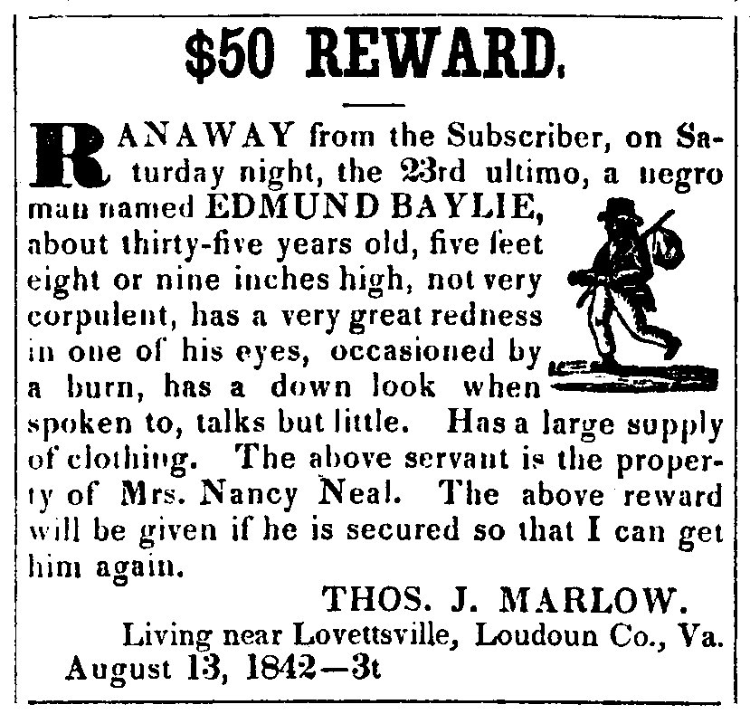

Original file  Transcribed text Twenty Dollars Reward. New Times Journal 1835-04-01 Page 3 RANAWAY from John Newsberry, 11 miles below Fayetteville, on the 13th of November last, a Negro Man named NELSON, 25 years of age, 5 feet 9 or 10 inches high, stout built, rather yellow complected--no particular marks recollected. He is quite an intelligent fellow: He is supposed to be lurking in the settlment where his master formerly resided, who has lately moved towards the West, or about the premises of Charles Counsel, resident in Robeson county, where he has a wife. The above reward will be given for his apprehension and delivery to me, or for his confinement in any jail, so that I can get him. URL - http://libcdm1.uncg.edu/RAS.php Tompkins county, Ithaca April 1, 1835